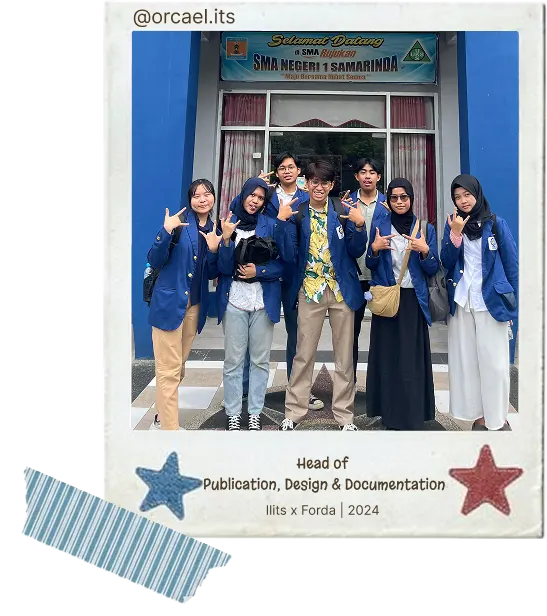
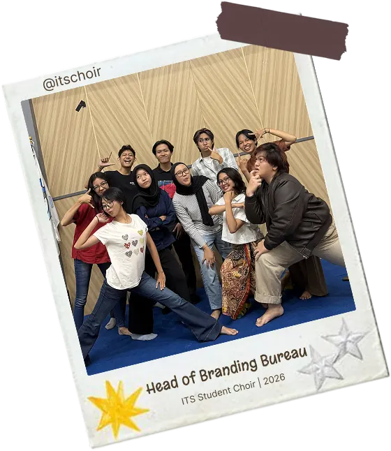
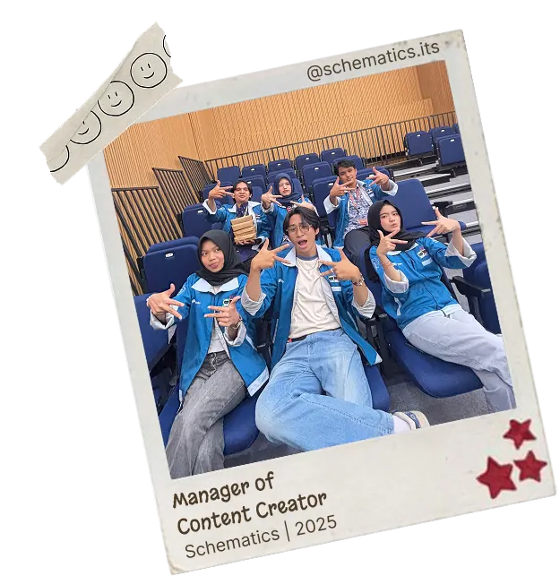

Visual Identity
Brand System - Design
A compact identity direction built from consistent color, type, layout, and asset rules.
please wait
Case file 2
Files exploring visual identity, composition systems,
layout experiments, and brand assets. Each case starts
with a visual problem and ends with a sharper direction.

Brand System - Design
A compact identity direction built from consistent color, type, layout, and asset rules.

Publication - Template
A reusable feed layout system for keeping visual content structured, readable, and consistent.

Campaign - Visual Design
Poster compositions focused on stronger hierarchy, clearer messaging, and expressive visuals.
1/3